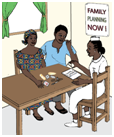

Inform client on benefits of postpartum family planning, and importance of birth spacing before having other children

- Discuss future fertility plans with the client and counsel her on family planning
- Inform her of return to fertility especially when not breastfeeding
- If breastfeeding inform her of the benefits and limitations of LAM
- Encourage clients to take advantage of FP services